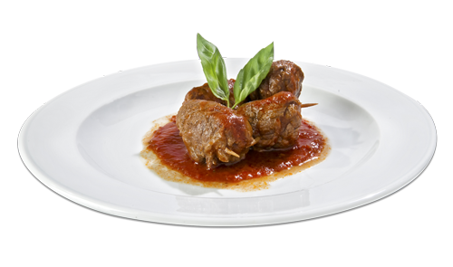

San Gregorio Magno
Notti di luna piena con profumo di vino, colori e musiche popolari nelle oltre 600 grotte di Via Bacco.


Vino

Cibo
Musica

Accoglienza

Storia di Via Bacco
Via Bacco è un'antica via sita nel comune di San Gregorio Magno in cui sono presenti circa 600 cantine ottenute mediante scavi effettuati all'interno della roccia. Le cantine si trovano in prossimità di Via San Zaccaria rinominata in gregoriano La ctatella che, in italiano, allude alla parola La cittadella ad indicare il fatto che il paese è nato in quella zona, definendola ad oggi la zona più vecchia di San Gregorio Magno. Le cantine risalgono al 1500 c.a. ed inizialmente vennero utilizzate dalla popolazione per rifugiarsi dai briganti che si raggiravano tra le montagne circostanti il paese. In seguito, e tuttora, sono utilizzate per conservare il vino prodotto dalle famiglie del paese.
Tour
Via Bacco è un'antica via sita nel comune di San Gregorio Magno in cui sono presenti circa 600 cantine ottenute mediante scavi effettuati all'interno della roccia. Le cantine si trovano in prossimità di Via San Zaccaria rinominata in gregoriano La ctatella che, in italiano, allude alla parola La cittadella ad indicare il fatto che il paese è nato in quella zona, definendola ad oggi la zona più vecchia di San Gregorio Magno.